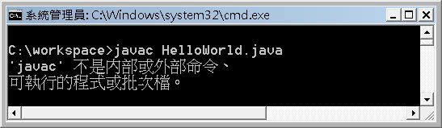
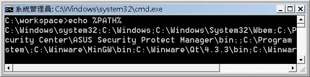
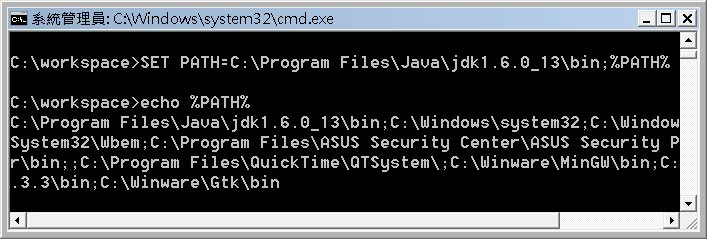
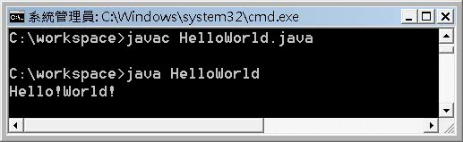
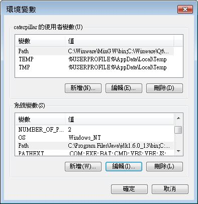

如果你寫了第一個HelloWorld.java：
public class HelloWorld {
public static void main(String[] args) {
System.out.println("Hello!World!");
}
}接下來打算編譯這個.java，編譯器的指令是javac。若這是電腦中第一次裝完JDK，在沒有進行任何設定下，會出現以下的訊息：

這是（Windows）作業系統在跟你說，它找不到javac放在哪邊！當你要執行一個指令，那個指令放在哪，作業系統並不會知道，除非你跟他說放在哪邊，例如 來安裝 JDK 中曾經提過，javac是放在JDK安裝目錄的bin中，所以鍵入以下的指令，就可以執行：
"C:\Program Files\Java\jdk1.6.0_13\bin\javac" HelloWorld.java
然而，若每次執行都得輸入指令所在位置，實在太累人了，而且你會有問題的是，來安裝 JDK 中最後示範執行java指令時， 為什麼可以直接執行？
其實，當你直接鍵入一個指令而沒有指定路徑資訊時，作業系統會依照PATH環境變數中所設定的路徑順序，依序尋找各路徑下是否有這個指令。你可以執行echo %PATH%來看看目前系統的PATH環境變數中包括哪些路徑資訊：

依 上面的PATH資訊，如果你鍵入java指令，則作業系統會找找看C:\Windows\system32中有無java(.exe)指令，如果沒有再找 看看C:\Windows下有無java(.exe)指令...找到的話就執行。而若你查看C:\Windows\system32，會發現當中確實有 java(.exe)，這是因為安裝JDK（JRE）時，Windows的JDK（JRE）安裝程式會自動放一份java(.exe)到C:\Windows\system32，所以這就是為什麼裝好JDK（JRE）後，就可以直接執行java指令。
然而，依上面的PATH資訊，如果你鍵入javac指令，作 業系統會找找看C:\Windows\system32中有無javac(.exe)指令，如果沒有再找看看C:\Windows下有無javac (.exe)指令...當所有路徑都找不到時，就會出現剛剛所看到的錯誤訊息，因為作業系統不知道你把javac放在哪裡了。
你要在PATH中設定指令的路徑資訊，作業系統才可以憑藉找到指令。如果要設定PATH，可以使用SET指令來設定，設定方式為SET PATH=路徑。例如：

設定時，若有多個路徑，會使用分號（;）作區隔，通常會將原有的PATH附加在設定值的後面，如此需要尋找其它指令時，才可以利用保留下來的原有PATH資訊。設定完成之後，你就可以執行javac並編譯HelloWorld.java了。
編譯完成之後，若沒有出現任何的訊息，就表示編譯成功，對編譯器來說，沒有訊息就是好消息。預設情況下，同一目錄下就會產生HelloWorld.class，接著執行java HelloWorld就可以執行程式：

不過！在所謂文字模式中如上設定，關掉這個文字模式後，下次要設定時就要重新設定。為了方便，可以的話，可以將之設定為使用者環境變數或系統環境變數，這也是一般Java入門書中都會說明的PATH設定。

在 一個可以允許多人共用的系統中，系統環境變數的設定，會套用至每個登入的使用者，而使用者環境變數則只影響個別使用者。當你開啟一個文字模式時，所獲得的 環境變數，會是系統環境變數再「附加」上使用者環境變數。如果使用SET指令設定環境變數，則以SET所設定的結果決定。
前面提過，作業系統會依照PATH環境變數中所設定的路徑順序，依序尋找各路徑下是否有這個指令。所 以你要注意PATH中路徑設定的順序，如果你有兩套以下的JDK，且在PATH中都設定了路徑順序，則在文字模式下鍵入javac（或其它）指令時，則會 執行的是在PATH設定中第一個找到的javac（或其它）指令。所以，想要使用的JDK版本必須是在PATH中第一個被找到的，安裝多個JDK時，必須注意PATH中所設定的路徑順序，確定你執行的是正確版本的JDK。
當你開啟一個文字模式時，所獲得的環境變數，會是系統環境變數再「附加」上使用者環境變數。所以若系統環境變數PATH中已經設定好某個JDK，則即使你在使用者環境變數PATH中將想要的JDK路徑設在最前頭，所執行到的也仍是系統環境變數PATH中已經設定好的JDK。如果你有足夠的權限修改系統環境變數，就要修改系統環境變數PATH（這也是為什麼Java入門書會建議設定系統環境變數，而且要將JDK路徑設在最前頭）。如果沒有權限變更，那就只好使用SET指令。如果使用SET指令設定環境變數，則以SET所設定的結果決定。
在一個安裝了多個JDK或JRE的電腦中，確定所執行的是哪個版本的JDK或JRE是很重要的，確定PATH中的路徑資訊是一定要作的動作。
<